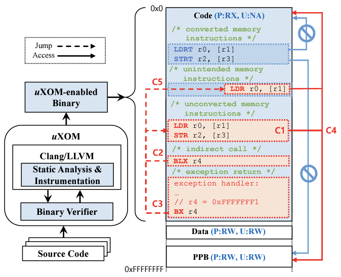

R / 01Hardware-assisted
System Security
System Security
Hardware-assisted
System Security.
상용 프로세서에 탑재된 하드웨어 보안 기능을 효과적으로 활용하여, 다양한 컴퓨팅 시스템에서 동작하는 하드웨어 기반 시스템 보안 기술을 연구합니다.
오늘날 컴퓨팅 시스템에 대한 다양한 보안 위협이 보고되고 있으며, 위협의 대상이 되는 컴퓨팅 시스템 역시 안전이 매우 중요한 자율주행자동차나 임베디드 의료기기로까지 확장되고 있습니다. 본 연구실은 이러한 보안 위협에 대응하기 위해 다양한 컴퓨팅 시스템에서 활용 가능한 하드웨어 기반 시스템 보안 기술을 연구합니다. 특히 컴파일러 기술 및 운영체제 기술 등을 활용하여, ARM TrustZone, Intel SGX, ARM Pointer Authentication 등 상용 프로세서에 탑재된 하드웨어 보안 기능을 효과적으로 활용하는 것을 목표로 합니다.
— Representative Publications
- Security '19uXOM↗
- DAC '24Micro-Fat Pointer↗
- ACSAC '25ELK↗
- ACSAC '25SMORE↗
